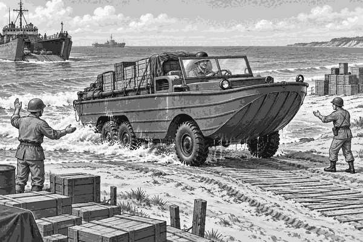

FACT
During World War Two, ships carried huge amounts of cargo.
They brought food, fuel, tools and medicine.
But a large ship could not always reach the beach.
Deep water ended far from the dry land.
Small boats could carry cargo through the shallow water.
Trucks could carry it along roads.
But moving every crate from a ship, to a boat, and then to a truck took time.
Engineers found a clever answer.
They built a truck that could swim.
Its name was the DUKW.
People usually called it a “Duck”.
The Duck had six wheels for driving on land.
It also had a boat shaped body that could float.
A propeller at the back pushed it through the water.
At sea, the wheels still turned.
But it was the propeller that moved the Duck forwards.
When it reached the beach, the wheels gripped the sand.
The same vehicle could then drive inland.
No second truck was needed.
In June 1944, Ducks carried supplies from ships to the beaches of Normandy.
A driver aimed towards the shore.
Waves splashed over the low front of the vehicle.
The Duck climbed out of the sea.
Its wet tyres rolled onto the sand.
Then it drove past the beach with its cargo still aboard.
This saved time when every crate mattered.
Vehicle fact: An amphibious vehicle can travel on land and in water. The word “amphibious” comes from an idea meaning “both kinds of life”.
Ducks carried more than boxes.
Some carried people or medical supplies.
Others crossed wide rivers when there was no bridge.
The Duck was not fast like a speedboat.
It was not quick like a small car.
Its special skill was doing two jobs.
It could leave a ship, cross the sea, climb onto land and keep going.
It looked like a boat.
It worked like a truck.
And that is how the truck that swam helped keep supplies moving.
1. What pushed the Duck through the water?
2. Why did the Duck save time?
3. What does amphibious mean?